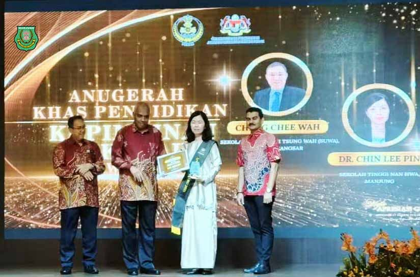
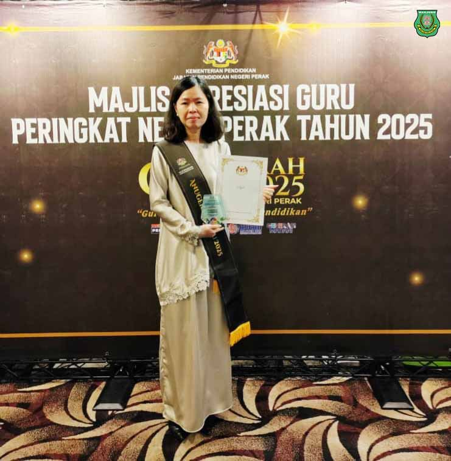
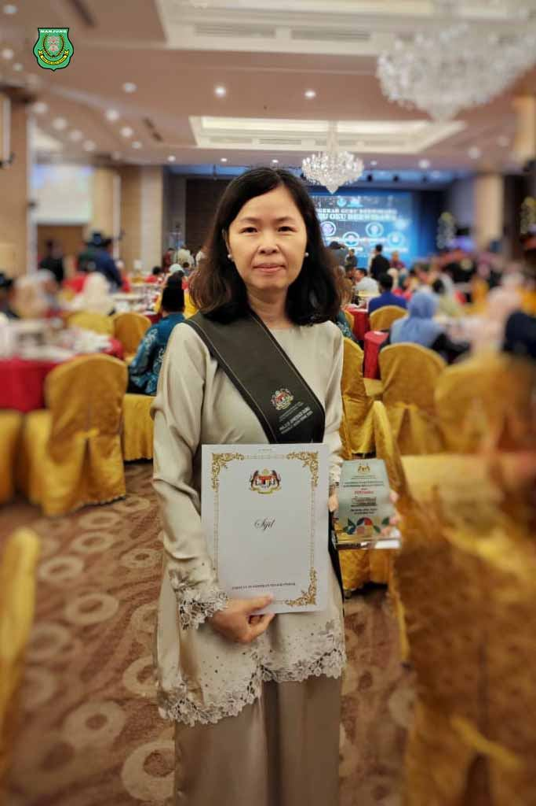

走在方向明确的教改路上
走在方向明确的教改路上
霹雳州私立学校领导力特别奖揭晓
南华独中校长陈丽冰博士荣膺冠军
本校 校长陈丽冰博士 受邀出席由 霹雳州教育局 主办的“#2025年霹雳州教育表扬大会”（Majlis Apresiasi Peringkat Negeri Perak）并凭借卓越的学校管理与领导表现，荣获“ #私立学校领导力特别教育奖”（Anugerah Khas Pendidikan Kepimpinan Sekolah Swasta 全州冠军（Johan）殊荣 。
#校长陈丽冰博士 表示，这项荣誉是马来西亚教育部在国家教师节荣誉体系中，通过考核私立学校的机构管理、愿景规划及资源整合等各个面向后颁布。陈校长表示。此次获奖象征着南华独中的办学质量不仅合乎于州教育局对私立学校质量标准（SKIPS）的评估，同时也是对本校教育理念与方针的正面肯定。
“改革需要有坚定的教育理念与方针，南华独中 #董事长颜登逸先生 所率领的董事会于2011年提出办学理念 ‘学会读书·学会做人’ 成为本校教育改革的重要方针。”校长陈丽冰博士在获得此州级最高荣誉奖项后受访时如此表示，随即强调这份殊荣有赖于本校全体董家教员生、县教育局以及社区伙伴：“这份荣誉从来不属于个人，学校的成就全靠过去与现在无数人为了南华独中风雨兼程，负重前行。”
曼绒南华独中在县级遴选中脱颖而出，获得代表霹雳州角逐全国级别的出赛权。本校全体同仁深知教育改革是一场长跑，得奖消息固然令人深受鼓舞，然而绝不因此松懈，只因为南华独中愿景“培养‘迎领’21世纪中华文化素养领袖人才”早已成为全员共识，教育改革始终是为南华孩子们创造更壮阔辽远的人生前景而推进。


